Steps to Host Web Page
1. Search github on google (or any search engine)
2. Open github.com
3. Click on sign up
4. Enter email,password,username
(if continue button disabled read the message at bottom to resolve issue)
5. Type "y" if you want to recieve updates from github and "n" if don't want to
6. Solve the puzzle
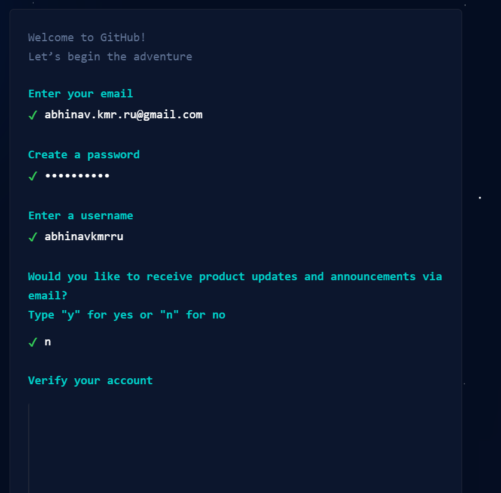
7. Click create account
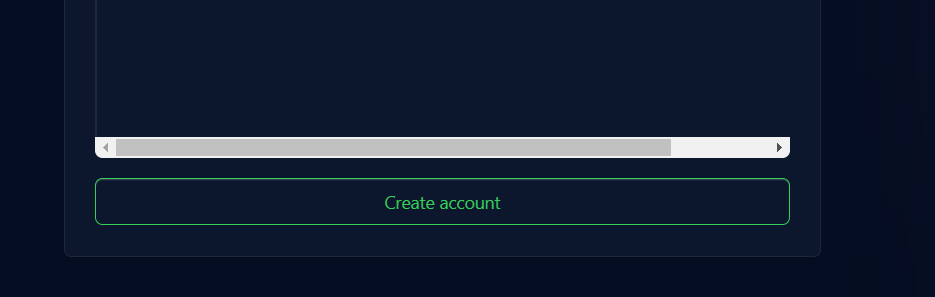
8. Click on create new repository
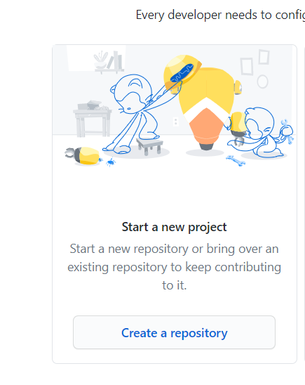
9. Enter repository name
10. Select public
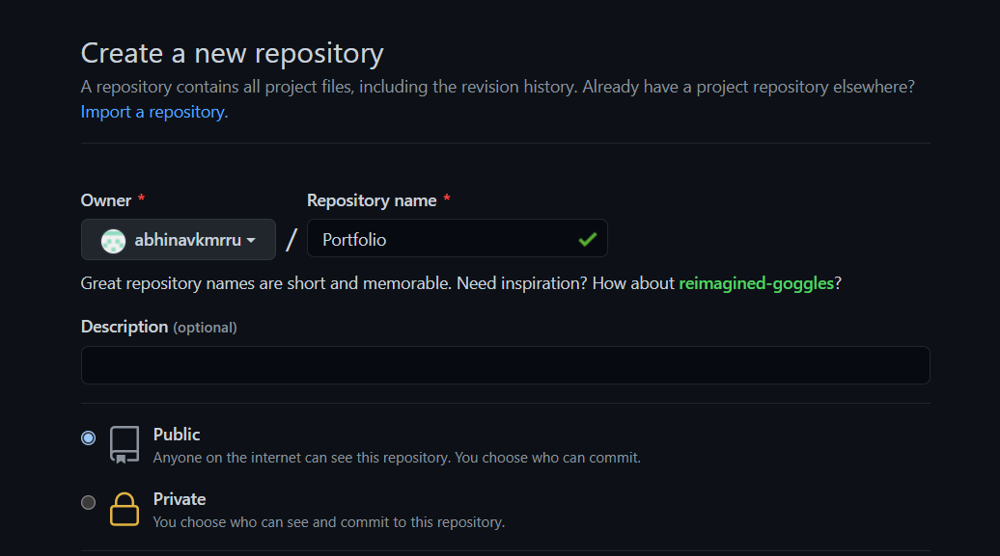
11. Click on Create Repository
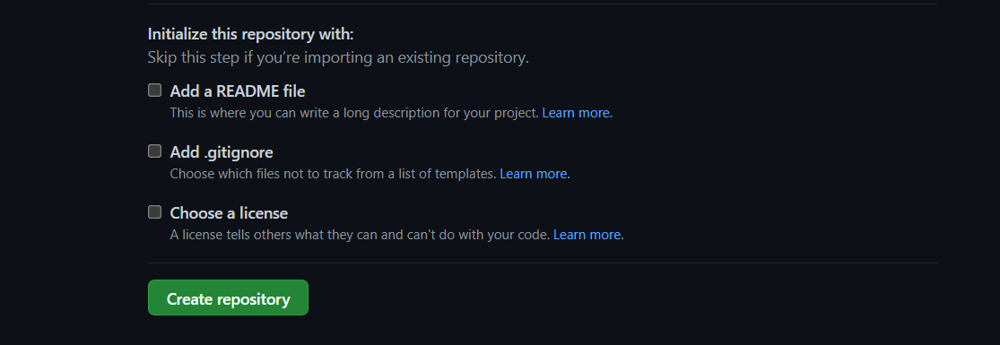
12. Click on "Uploading an existing file"
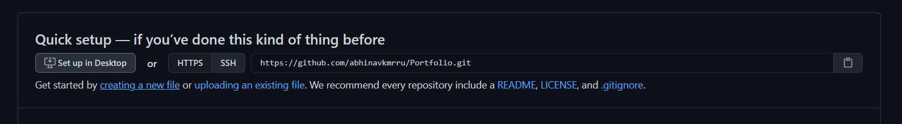
13. Upload the index.html file
14. Add description (optional)
15. Click commit changes
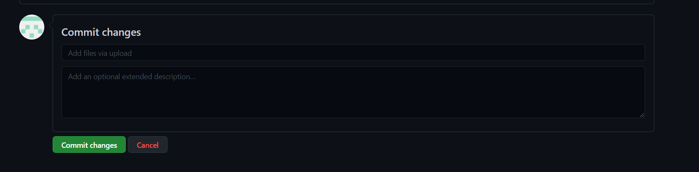
16. Click on Settings
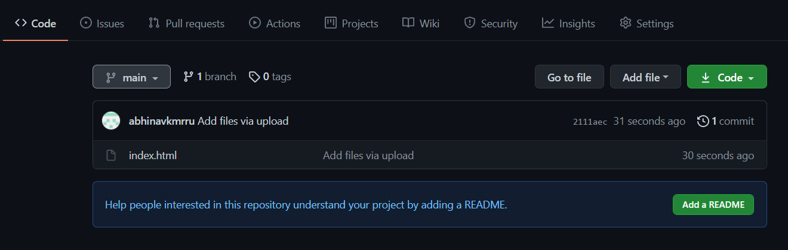
17. Scroll Down and find GitHub Pages
18. Click on "Check it out here"
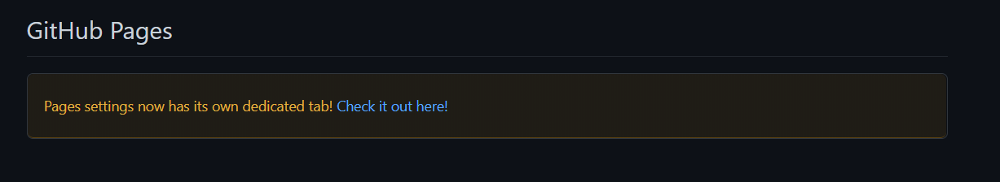
19. Click on None dropdown
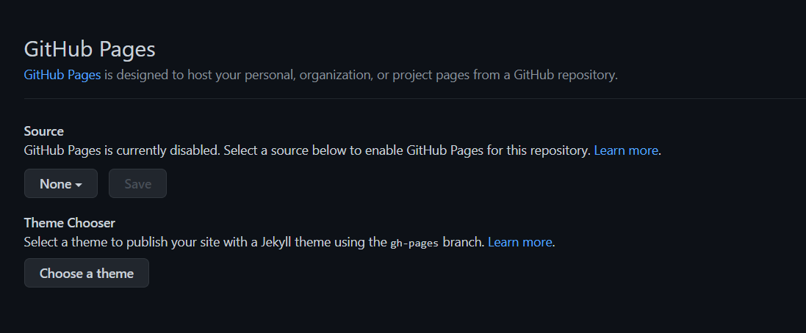
20. Select main
21. Click on save
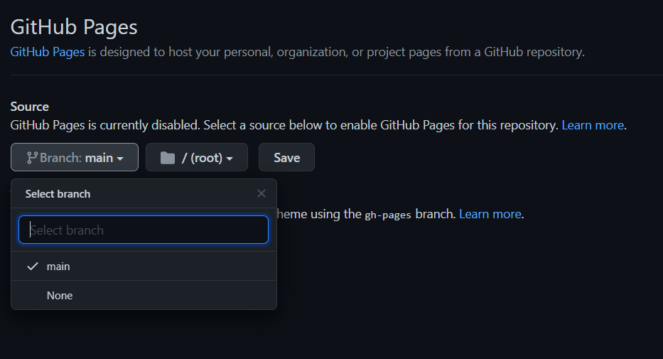
22. You will see a link use this link to open your website
23. Click on Github logo on top left corner
24. You will see all the repositories created by you on left side of web page.
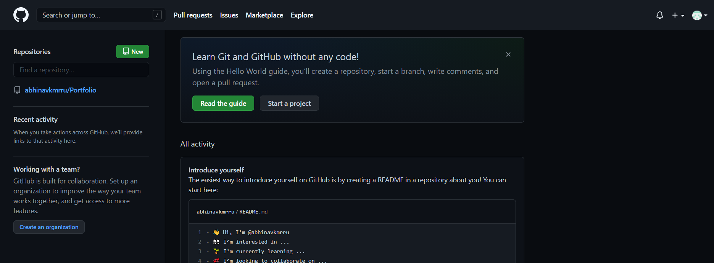